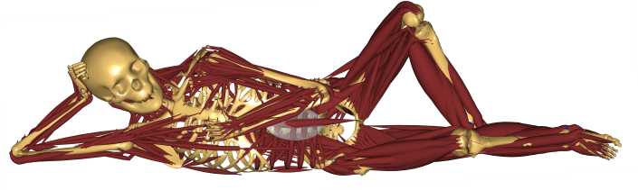

AnyPyTools’s documentation!¶
AnyPyTools is a toolkit for working with the AnyBody Modeling System (AMS) from Python.
Its main purpose is to launch AnyBody simulations and collect results. It has a scheduler to launch multiple instances of AMS utilising computers with multiple cores. AnyPyTools makes it easy to do parameter and sensitivity and many other things which is not possible directly within the AnyBody Modeling System.
Installation¶
Guides¶
Documentation¶
Development¶
I greatly appreciate any contributions to AnyPyTools! If you would like to contribute, it is as easy as forking the repository on GitHub, making your changes, and issuing a pull request. If you have any questions about this process don’t hesitate to ask.
See the Developer’s Guide for more information about contributing.
Usefull links¶
If you have questions or comments, please contact the author directly, or open a [new issue on GitHub](https://github.com/AnyBody-Research-Group/AnyPyTools/issues/new).